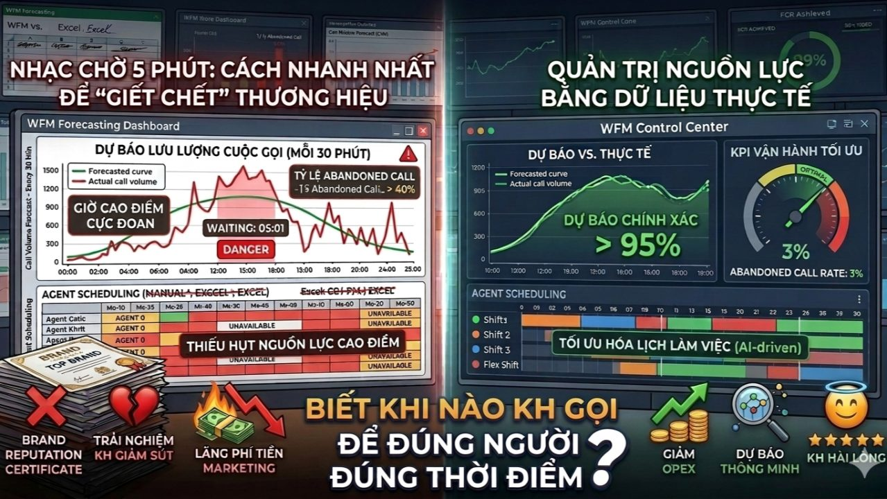

Trang chủ › Blog › Contact Center Insights · Mùa 1
Nền tảng vận hành
Vì sao nhiều Contact Center luôn quá tải?

Bạn đã bao giờ tự hỏi: Tại sao một ngân hàng có hàng nghìn nhân sự, đầu tư hàng triệu USD vào Marketing, nhưng khách hàng lại phải chờ đợi "vô vọng" mỗi khi gọi lên Hotline?
Câu trả lời thường gặp nhất từ phía quản lý là: "Chúng tôi đang thiếu người!".
Nhưng với kinh nghiệm thực chiến trong việc tư vấn giải pháp, mình muốn khẳng định một nghịch lý rằng: Hotline quá tải thường không phải do thiếu Agent, mà do chúng ta đang "mù lòa" trước dữ liệu lưu lượng cuộc gọi của chính mình.
1. Đừng lấy "thịt" đè người khi chưa hiểu con số
Phản xạ tự nhiên khi thấy tỷ lệ cuộc gọi nhỡ (Abandoned Call) tăng cao là tuyển thêm nhân sự. Nhưng nếu bạn không biết khi nào khách hàng sẽ gọi vào, bạn đang ném tiền qua cửa sổ.
Một Contact Center vận hành theo cảm tính hoặc dựa trên bảng tính Excel thủ công thường rơi vào thảm cảnh:
- Giờ cao điểm: Khách hàng chờ đợi trong giận dữ, Agent stress vì bị "tấn công" dồn dập.
- Giờ thấp điểm: Agent dư thừa, chi phí vận hành (OPEX) vẫn chạy nhưng năng suất lại chạm đáy.
2. Forecast (Dự báo): Trái tim của sự thông suốt
Dự báo trong Contact Center chuyên nghiệp là một bộ môn khoa học. Nó không phải là con số trung bình ngày, mà là sự bóc tách dữ liệu theo từng 15-30 phút.
Để dự báo chuẩn, chúng ta cần nhìn vào:
- Dữ liệu lịch sử: Xu hướng cùng kỳ năm ngoái, tháng trước.
- Biến số thực tế: Một chiến dịch khuyến mãi mới, một đợt bảo trì hệ thống App, hay đơn giản là ngày đến hạn thanh toán thẻ...
Nếu không có khả năng dự báo, bạn đang vận hành một "cỗ máy triệu đô" bằng cách... đoán mò.
3. WFM (Workforce Management) – Nhạc trưởng điều phối nguồn lực
Tại các trung tâm vận hành hiện đại, hệ thống Workforce Management (WFM) chính là giải pháp để chấm dứt tình trạng quá tải ảo. WFM giúp doanh nghiệp:
- Forecasting: Tính toán chính xác lưu lượng cuộc gọi dựa trên các mô hình toán học.
- Scheduling: Tối ưu hóa lịch làm việc của Agent sao cho "khớp" hoàn hảo với biểu đồ cuộc gọi.
- Real-time Management: Điều chỉnh nhân sự ngay lập tức khi có biến động bất ngờ (tăng đột biến do sự cố kỹ thuật chẳng hạn).
Lời kết:
Khách hàng không quan tâm bạn có bao nhiêu nhân viên, họ chỉ quan tâm bao lâu thì có người nhấc máy để giải quyết vấn đề của họ. Một Contact Center vận hành thông minh không cần quá nhiều người, họ chỉ cần đúng người vào đúng thời điểm.
Đã đến lúc khai tử tư duy "lấy thịt đè người" và bắt đầu quản trị nguồn lực bằng dữ liệu thực tế.
👉 Góc thảo luận: Anh chị đã từng trải qua "cơn ác mộng" quá tải nào dù đội ngũ vẫn rất đông chưa? Theo kinh nghiệm của các anh chị, sai số bao nhiêu phần trăm trong dự báo là có thể chấp nhận được trong ngành tài chính?
Hãy chia sẻ cùng tôi ở phần bình luận nhé!